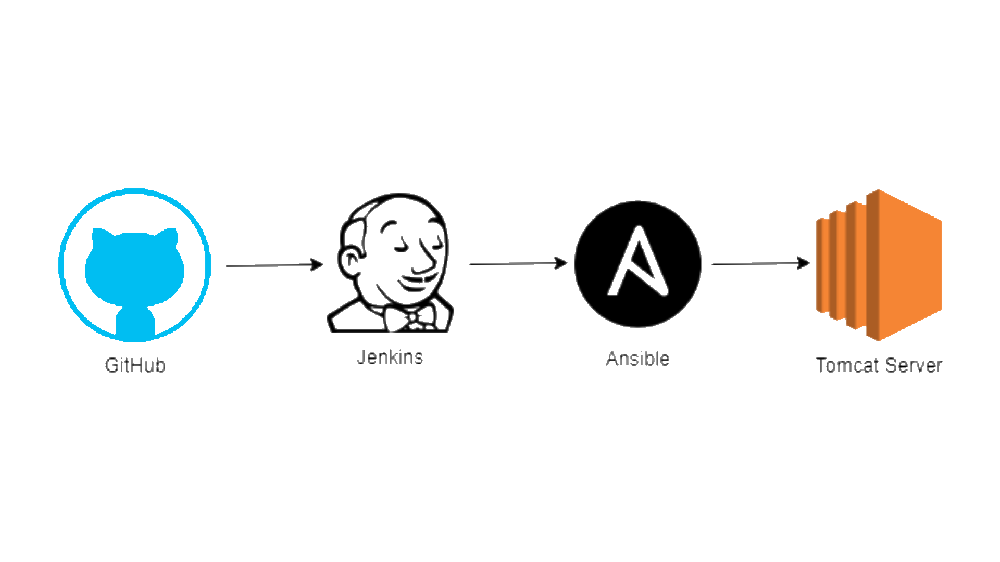

DevOps CI/CD

Familiarizing with different DevOps tools including Git, Junit, Jenkins, Ansible to create a Maven web application and make it deployed under a DevOps pipeline which make it adaptable, flexible and agile to changes.

In this project, I implemented many tools in my pipeline including:
Git
Git is a DevOps tool used for source code management. It is a free and open-source version control system used to handle small to very large projects efficiently.
Git is used to tracking changes in the source code, enabling multiple developers to work together on non-linear development.
Jenkins
Simply put, Jenkins has become the open source standard for managing the dev side of devops, from source code management to delivering code to production
Jenkins is a continuous integration (CI) and continuous delivery (CD) solution.
Ansible
Ansible is an open source IT Configuration Management, Deployment & Orchestration tool.
It aims to provide large productivity gains to a wide variety of automation challenges.
This tool is very simple to use yet powerful enough to automate complex multi-tier IT application environments.
Tomcat
Apache Tomcat is an open-source implementation of the Java Servlet, JavaServer Pages, Java Expression Language and WebSocket technologies. Tomcat provides a "pure Java" HTTP web server environment in which Java code can run.